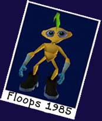
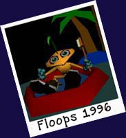

FLOOPS FACTS
Name: Floops (Floopsiphlylus arachnovrmlite)
Origin: Congo (West Central Africa)
Languages: English, French, and Lingala
Date Of Birth: 05.23.84
Life Expectancy: There has only ever been one captured "Floops,"
therefore it is difficult to calculate an estimated life expectancy.
Sex: Floops' follow a "don't ask don't tell" guideline.
Diet: Meal worms, grains, and anything marinated in an orange honey
glaze or cooked on the grill.
Conspiracy Angle: There is an "unidentified" hanger/warehouse 15 miles east
of the iron ore mining field (iron is a common resource exported from Congo)
where Floops was discovered. Some curious scientists, academics and
clever television paranormal personalities
have speculated that "Floops" may have some
extra-terrestrial ties. It may be possible that there are some subtle
circumstances which indirectly
point to a slight probability that Floops is not 100 percent from the planet Earth.
The CIA and the Rainforest Action Network declined to comment.
Floops Controversy...
The following is all that remains of a transcript from government
file x2342-5 regarding Floops's "true" history. Be warned, what you read may be
shocking.
"Well, I'm not exactly sure how it happened. You see I wasn't, and then I was.
What I mean to say is that I don't know where I came from. It's all
rather strange. A group of college kids found me on a hike (so they say,
I'm not sure what they were doing hiking through the mining fields...) I was
very small, and they also say that I was nearly dead from
dehydration. (The
dry season in Congo is especially harsh on new life.) But they took
me in and fed me lots of polenta and meal worms. Eventually, like all
good things, our relationship had to end. See, they weren't very
communicative and it was difficult for them to really meet my needs. So
after a long discussion we exchanged "boxes" of eachothers personal
belongings that we had collected over the years, I think this was
1989, and I went on my way."
 "At first the journey was hard, searching for food,
climbing grueling terrains, dodging the scorching sun....
not to mention I was
starved for intellectual and social stimulation. Eventually though, I
found my way into the pocket of a professor from Berkeley, California, and while he
did not directly communicate with me, I did enjoy the conversation he
had on the plane with the New Media Lawyers about intellectual property.
I digress. Unfortunately, Mr. professor man wasn't so smooth at the customs
check and I got confiscated and banished to a grey cell (kind of like this one), with no windows mind you, a
concrete floor and a stale bowl of sulfur laced water. Bleachk. No respect,
I tell you."
"At first the journey was hard, searching for food,
climbing grueling terrains, dodging the scorching sun....
not to mention I was
starved for intellectual and social stimulation. Eventually though, I
found my way into the pocket of a professor from Berkeley, California, and while he
did not directly communicate with me, I did enjoy the conversation he
had on the plane with the New Media Lawyers about intellectual property.
I digress. Unfortunately, Mr. professor man wasn't so smooth at the customs
check and I got confiscated and banished to a grey cell (kind of like this one), with no windows mind you, a
concrete floor and a stale bowl of sulfur laced water. Bleachk. No respect,
I tell you."
"I stayed in the cell for a number of days, or weeks it could have been,
and I had lost at least 3 or 4 ounces before someone realized I might
be a special "endangered" species. They called the local
enviro-hotline number which is listed on the "in case of emergency"
bulletin board next to the donut table in the customs office. But
moments before the local hotline representatives got to my cell, I was
swooped up by a yip yapping chihuahua and carried to a dark corner of the
building..."
"And then I looked that puppy square in the eyes and said, 'you listen here
chihuahua baby....' Hey, wait, I'm
not finished yet. And then THEY CHANGED MY NAME! Hey! You can't just shut me up like that. This is outrage. I have rights you know. Wait. Wait......" ZZZZzap.

Um, We're sorry Floops but it seems you're
having another episode of "over-active" imagination syndrome again.
Do you want another shot of the yum yum tasty medicine? Repeat after me, "I grew up in a terrarium in a simple, but elegant, pet
store outside Mountain View, California. None of the information previously stated
can be verified." Thank you for your patience. That's a good Floops.
|